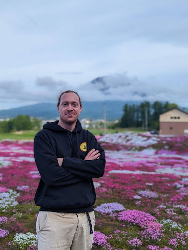

O nas
Technologia z praktycznym, ludzkim podejściem.
BonsAi Studio powstało z połączenia projektowania, programowania i doświadczenia w prowadzeniu własnego biznesu.

Założyciel BonsAi Studio
Od pomysłu do gotowego rozwiązania.
Jakub Mierosławski łączy doświadczenie w tworzeniu stron i aplikacji z praktyką przedsiębiorcy i prowadzeniem SeaMonk.jp — szkoły nurkowania działającej w Japonii. Dzięki temu patrzy na stronę lub aplikację nie tylko jak na kod, ale jak na narzędzie codziennej pracy firmy.
Wie, jak ważne są szybki kontakt, jasna oferta, wygodna obsługa klienta i systemy, które nie wymagają technicznej wiedzy. Projektuje rozwiązania dla ludzi, którzy chcą prowadzić biznes sprawniej, wyglądać profesjonalnie i odzyskać czas.
W BonsAi Studio rozmawiasz bezpośrednio z osobą, która poznaje potrzeby, projektuje rozwiązanie i odpowiada za jego wykonanie. Nie ma przekazywania projektu między anonimowymi działami ani obietnic bez pokrycia.
Inspiracją marki jest bonsai: trwały wzrost wymaga dobrych korzeni, świadomych decyzji i regularnej pielęgnacji. Tak samo traktujemy strony i aplikacje — mają być stabilne dzisiaj i gotowe na rozwój jutro.
Zasady współpracy
Spokojny proces i pełna kontrola.
Przed startem ustalamy zakres, budżet i termin. Pokazujemy postęp, zbieramy poprawki etapami i nie publikujemy projektu bez Twojej akceptacji.